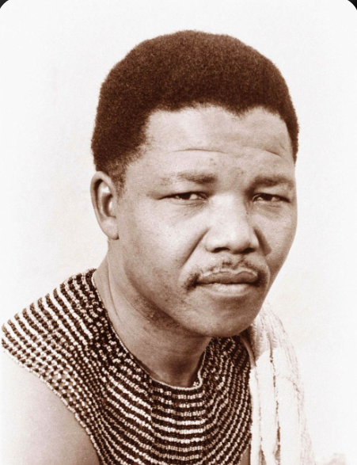
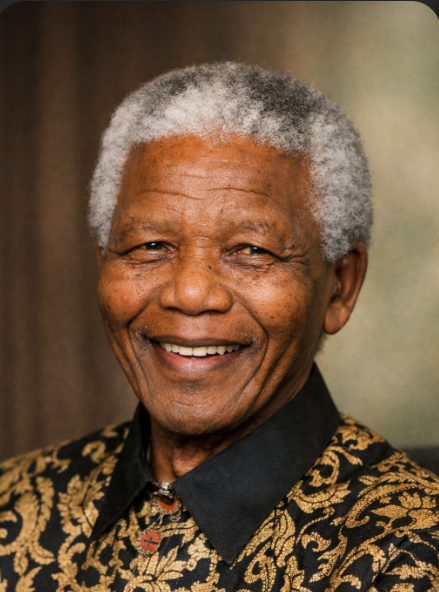

Nelson Mandela
Father of a Free Nation
From the village of Mvezo to the Union Buildings of Pretoria — the extraordinary life of South Africa's greatest son, who transformed a nation through forgiveness and an unbreakable will for justice.
Origins & Early Life
Born 18 July 1918 in Mvezo, Eastern Cape, Nelson Rolihlahla Mandela was the son of a Thembu chief. His name meant "pulling the branch of a tree" — troublemaker. After his father's death he became ward of Chief Jongintaba, who ensured his education. He and Oliver Tambo later established South Africa's first Black law firm.
The Struggle & The Trial
"I have cherished the ideal of a democratic and free society. It is an ideal for which I am prepared to die."
— Rivonia Trial, 20 April 1964
In 1944 Mandela co-founded the ANC Youth League. Arrested in 1962 and sentenced to life at the Rivonia Trial, he became Prisoner No. 466/64 on Robben Island — his cell eight feet by seven. He would not walk free for 27 years.
Presidency & Legacy
Released 11 February 1990, inaugurated 10 May 1994. He chose reconciliation over retribution — the Truth & Reconciliation Commission and a landmark constitution. He stepped down in 1999 and passed away 5 December 2013, aged 95.
"For to be free is not merely to cast off one's chains, but to live in a way that respects and enhances the freedom of others."
A Chronology of Courage
1918
Born in Mvezo, Eastern Cape.
1944
Co-founds ANC Youth League.
1964
Sentenced to life, Robben Island.
1990
Released from Victor Verster Prison.
1993
Nobel Peace Prize with de Klerk.
1994
Inaugurated as first democratic president.
1999
Steps down voluntarily after one term.
2013
Passes away in Johannesburg, aged 95.
Selected Honours & Awards
| Year | Award | Detail |
|---|---|---|
| 1993 | Nobel Peace Prize | Jointly with F.W. de Klerk |
| 1990 | Bharat Ratna — India | India's highest civilian honour |
| 2002 | Presidential Medal of Freedom — USA | Awarded by President Bill Clinton |
| 1995 | Order of Merit — United Kingdom | Conferred by Queen Elizabeth II |